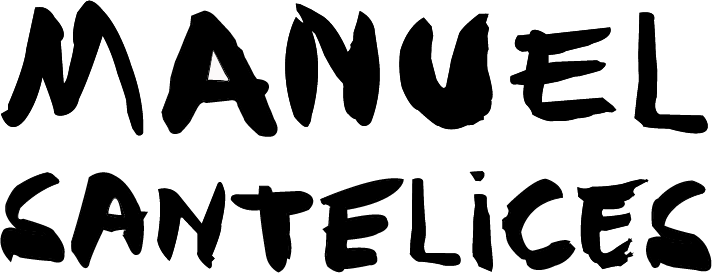

The worlds of fashion, society and pop culture are explored through the illustrations of Manuel Santelices, a Chilean artist and journalist living and working in New York for the last 20 years. After writing stories about style, design, art and politics for a number of magazines, including the Spanish editions of Elle, Harper’s Bazaar and Esquire, and being a fashion writer in New York for Vogue Mexico and Latin American for 7 years, Manuel decided to focus his attention on illustration, painting mostly with watercolors the same characters and events he covered as a journalist.
